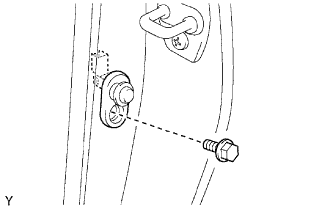

CÔNG TẮC ĐÈN CỬA SAU > THÁO
Xem Phần Chuẩn Bị
Kích chuột vào đây
GỢI Ý:
Dùng quy trình giống nhau cho phía bên trái vào phải.
Quy trình liệt kê sau đây là cho phía bên trái.
Bulông không có mômen xiết tiêu chuẩn được chỉ ra trong bảng bulông tiêu chuẩn. (Xem trang
Kích chuột vào đây
).
1. NGẮT CÁP ÂM RA KHỎI ẮC QUY
LƯU Ý:
Đợi 90 giây sau khi tháo cáp ra khỏi cực âm (-) ắc quy để tránh làm nổ túi khí.
2. THÁO CÔNG TẮC ĐÈN CỬA SAU TRÁI

Tháo bulông và công tắc.
Ngắt giắc nối.